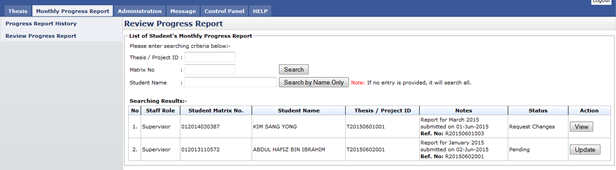

Figure 27: Review Progress Report
Pre-condition
- Accept senate invitation as Supervisor
- Supervisee has submitted monthly progress report
Post-condition
- Can view progress report
- Wait for supervisee to submit new progress report or changes progress report
Steps:-
- Click on the Monthly Progress Report tab on the Top panel
- Click on the Review Progress Report menu on the Left panel
- System will display list of supervisee
- Status of the monthly progress report display on Status column
- To view monthly progress report detail, click View button (refer View Progress Report Detail)
- To review monthly progress report, click Update button (refer Review Progress Report)
Created with the Personal Edition of HelpNDoc: Full-featured Help generator